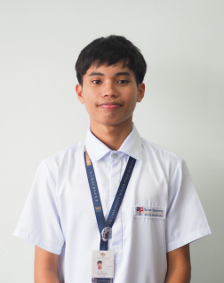

Si Nephi Cianne L. Del Rosario ay isang mag-aaral ng Grade 12 STEM-CETTI sa Xavier University - Ateneo de Cagayan. Kasalukuyan siyang nagsisilbi bilang Vice President ng kanilang klase at miyembro ng Department of Events Management, kung saan kabilang siya sa Creatives Committee. Kinikilala niya ang graphic design bilang isa sa kaniyang pangunahing larangan at interes, lalo na sa paggawa ng pubmats, stage designs, at iba pang malikhaing materyales para sa mga school events.
Bago ang kaniyang kasalukuyang posisyon, nagsilbi rin siya bilang Public Information Officer (PIO) at Peace Officer noong Grade 10. Naging Project Head din siya para sa isang event na bahagi ng kanilang Graduation Ball. Sa pamamagitan ng kaniyang organisasyon, naging bahagi siya ng iba’t ibang school events kung saan siya ay gumagawa ng pubmats, nagdidisenyo ng stage, at tumutulong sa pagsasakatuparan ng mga malikhaing konsepto. Sa akademikong larangan, natanggap niya ang With Honors mula Grade 7 hanggang Grade 8, With High Honors noong Grade 9, at With Honors noong Grade 10. Naging kinatawan din siya ng kanilang paaralan sa isang Mathematics Quiz Bee.
Nephi Cianne L. Del Rosario
Strand: Grade 12 STEM-CETTI
Xavier University - Ateneo de Cagayan

• Grade 9: With High Honors
• Grade 7, Grade 8 & Grade 10: With Honors
• Competitions: School Representative for Mathematics Quiz Bee
• Class Vice President: Grade 12 (Current)
• Department of Events Management: Creatives Committee Member
• Project Head: Graduation Ball Event Sub-committee
• Public Information Officer (PIO) & Peace Officer: Grade 10
• Graphic Design & Promotional Materials (Pubmats)
• Stage Design & Creative Concept Execution
• Event Management & Leadership